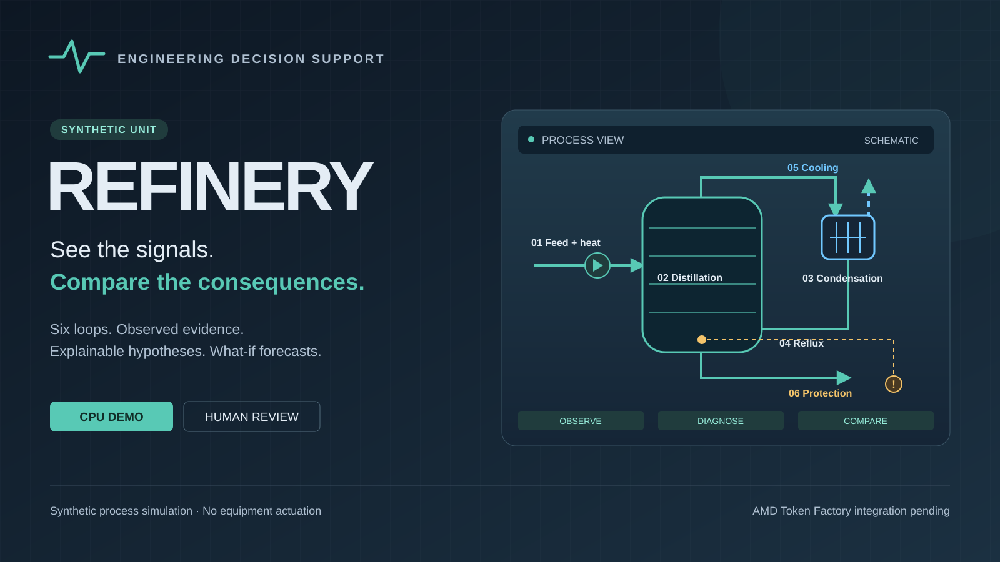

See the unit
Follow temperatures, pressures, alarms, and nominal references across six logical loops.

02 / THE PROBLEM
A temperature rise is an observation. Deciding what to inspect next needs a connected view of the process.
Follow temperatures, pressures, alarms, and nominal references across six logical loops.
Review competing diagnostic hypotheses and the observations behind them.
Explore conditional action forecasts before a human review.
03 / THE WORKFLOW
One calculation connects a process scenario to an inspectable engineering workflow.
Nominal and disturbed trajectories
Temperatures, pressures, protection
Evidence and similarity scores
Assumptions and action consequences
Reviewable output
Persisted calculation history, charts, notes, and exports.
Clear information boundary
Hidden simulator truth is separate from the diagnostic observation view.
04 / THE WORKSPACE
05 / A DEMONSTRATION
The user selects a synthetic scenario. Diagnosis then works from the resulting observations.
Start a cooling-loss scenario. Follow pressure and temperature against the nominal reference.
Open ranked hypotheses, compare their evidence, and inspect the selected analysis time.
Compare hold, restore cooling, reduce heating, and reduce feed under stated assumptions.
06 / CREDIBILITY
07 / TECHNOLOGY + AMD STATUS
Python
NumPy · SciPy · CoolProp
JavaScript · HTML · CSS
Local server and browser workspace.
No API key is required for the CPU demo.
Account registration and an official endpoint/model are still required.
No AMD inference or GPU execution is claimed.
08 / TRY THE WORKFLOW
REFINERY turns a synthetic disturbance into an evidence-led engineering review.
python -m amd.serverOpen http://127.0.0.1:8765/industryCreate a new calculation with action comparison.
Follow signals, evidence, and ranked hypotheses.
Review conditional forecasts and the video wall.
Public repository, hosted demo, and video publication links will be verified before submission. AMD Token Factory integration remains pending.